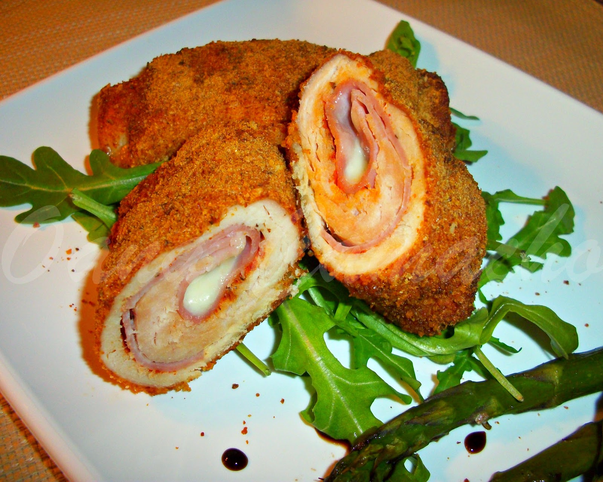

Home
Cordon Bleu Recipe

Description
Traditionally a decadent Swiss dish, this Healthy Cordon Bleu features a
lean chicken breast wrapped around high-quality smoked ham and a slice of
reduced-fat Swiss cheese. Instead of a heavy flour-and-egg-wash breading
fried in butter, we use seasoned Panko or whole-wheat breadcrumbs and bake
it to a golden crunch. It’s high in protein and much lower in saturated
fats.
Ingredients
- 2 Large Chicken Breasts (Butterfly-cut and pounded thin)
- 4 Slices Extra-Lean Smoked Ham (Low sodium)
- 2 Slices Reduced-Fat Swiss Cheese (or light Jarlsberg)
-
1/2 cup Panko Breadcrumbs (Whole-wheat if available for extra
fiber)
- 1 tsp Garlic Powder & 1 tsp Paprika
- ½ tsp Dried Parsley
- 1 tbsp Dijon Mustard (Used as a "glue" instead of flour/oil)
- 1 Egg White (Lightly beaten)
- Cooking Oil Spray (Olive or Avocado oil)
- Salt and Black Pepper to taste
Steps
-
Prep the Chicken Butterfly each chicken breast by cutting horizontally
(but not all the way through) and open it like a book. Place between
parchment paper and pound with a meat mallet until about 1cm thick.
Season lightly with salt and pepper.
-
Place two slices of ham and one slice of cheese on each breast. Leave a
small margin at the edges. Roll the chicken up tightly, tucking in the
sides. Pro Tip: Secure the roll with toothpicks so the cheese doesn't
leak out during cooking.
-
The Healthy Coating In one bowl, mix the egg white and Dijon mustard. In
another, mix the breadcrumbs, garlic powder, paprika, and parsley. Brush
the chicken roll with the mustard/egg mixture. Roll it in the
breadcrumbs until evenly coated.
-
The Cooking (No Deep-Frying) Oven Method: Preheat to 200°C. Place
chicken on a wire rack over a baking sheet (this allows air to circulate
for a crunch). Spray lightly with oil. Bake for 20–25 minutes. Air Fryer
Method: Cook at 180°C for 15–18 minutes, flipping halfway through and
spraying with oil once.
-
Rest Let the chicken rest for 5 minutes before slicing. This allows the
juices to redistribute and the cheese to set slightly so it doesn't all
run out instantly.